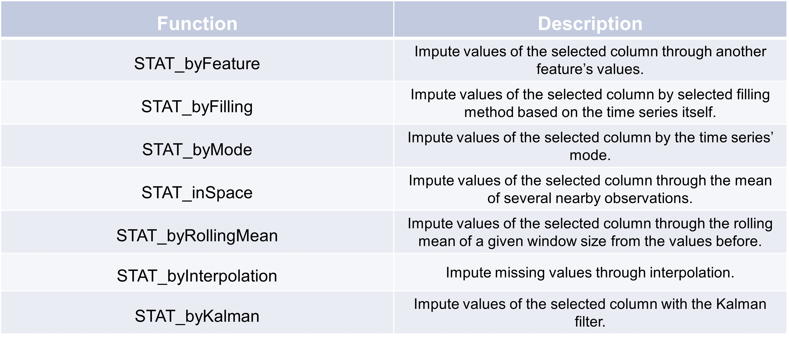

Statistical error correction#
Feature#
A correction function to replace the missing values in your selected column with values from a feature column if necessary. When the feature column does not exist, you get a series of ‘NaN# values back. Here’s an example of how to use the ‘STAT_byFeature’ function:
>>> data = {
>>> "val_raw": [1, None, np.nan, 1, None],
>>> 'E': [3, 3, None, 3, 3]
>>> }
>>> df_fea = pd.DataFrame(data)
>>> config = TSCC.preprocessing.Config(colname_raw = 'val_raw')
>>> TSCC.correction.STAT_byFeature(df_fea, None, "isError", config, "E")
0 1.0
1 3.0
2 3.0
3 1.0
4 3.0
Name: val_raw_pred, dtype: float64
As expected the series contains no missing values and has replaced them with values form the feature column ‘E’.
Filling#
This function imputes missing values in the dataframe using a specified filling method. There are three options to replace the missing data. The first one ‘ffill’ uses the last valid observation forward to the next valid. The second option ‘backfill’ uses ne next valid value and the last one uses a custom number you can choose to substitute the absent value. Here’s an example of how to use the ‘STAT_byFilling’ function:
>>> data = {
>>> "val_raw": [1, None, np.nan, 8, None],
>>> 'E': [3, 3, None, 3, 3],
>>> }
>>> df_fea = pd.DataFrame(data)
>>> config = TSCC.preprocessing.Config(colname_raw = 'val_raw')
>>> TSCC.correction.STAT_byFilling(df_fea, None, "isError", config, filler = "ffill")
0 1.0
1 1.0
2 1.0
3 8.0
4 8.0
Name: val_raw_pred, dtype: float64
As expected the second and third missing value has been replace with the 1 from the first value before them. Same goes with the last value and the fourth one.